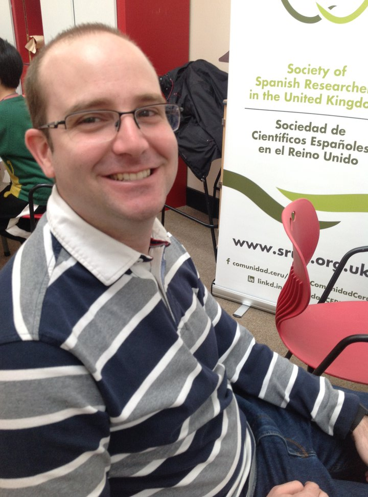
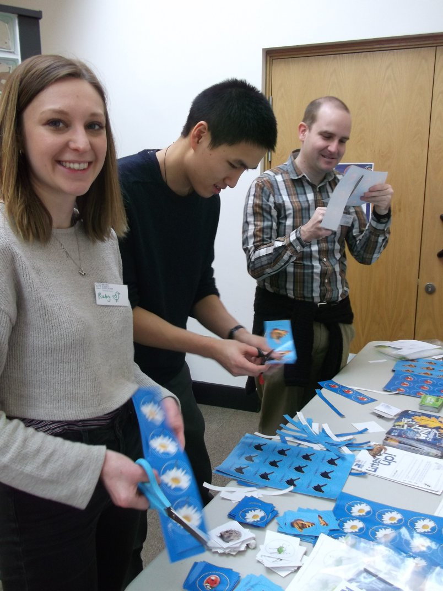
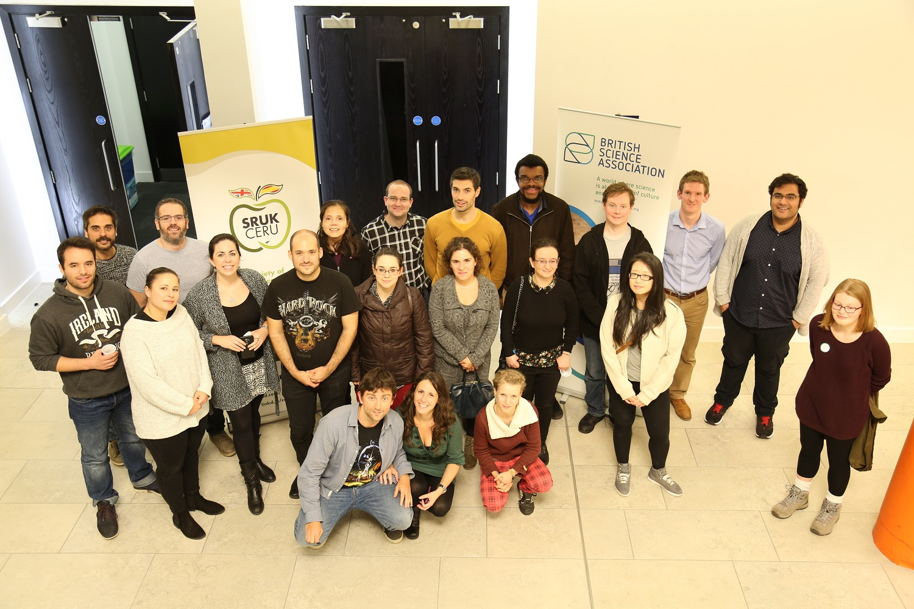
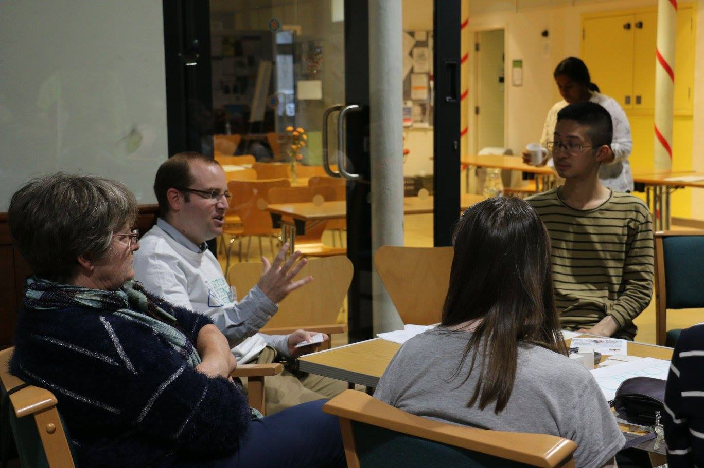

As a scientist I think it is very important to bring the research that we do out of the lab and make it understandable to everyone, as well as try to bring our passion for science to the general public.
Because of this I participate in different organizations whose goal is to organize events to bring science in different forms to the general public.
I am the secretary of the Yorkshire delegation of the Society of Spanish Researchers in the United Kingdom (SRUK).
I am also a volunteer in the Sheffield branch of the British Science Association (BSA).
Below I provide a few highlighted events I have helped organize as part of these organizations.
Science of Multilingualism
This event took place on the Weston Park Museum in Sheffield.
The event promoted the benefits of learning a foreign language, especially on children.
The event had stands for Spanish, Bulgarian, Chinese, and Arabic.
In each stand, a few words were taught in each language while the attendees performed simple scientific experiments.
In the Spanish stand, promoted by SRUK, they were shown a neuron and an astrocyte preparation on a microscope, in honor of Santiago Ramón y Cajal.
There were also tasters of food from many countries and a cross-word activity for children to explore the museum.

Nature detectives
This event took place on the Weston Park Museum in Sheffield.
We organized different stands with activities for kids.
In these stands they could learn about different animal parts and what they can teach us.
Among the stands, there were activities about spoor, teeth, and footprints, among others.
The kids also learned how to use a taxonomical key to identify animals.
The Otter lab from the University of Sheffield was also present at the event.

CineScience Sheffield
CineScience is a set fo events where film and science are mixed together.
They consist of a documentary screening followed by a discussion.
The third CineScience event took place in the Diamond building in Sheffield on the 28th of October.
The topic of the session was amyotrophic lateral sclerosis (ALS), also known as motoneuronal disease.
The documentary shown was "Jason Becker: Not Dead Yet", that tells the story of a guitarist virtuoso who was diagnosed with ALS at the age of 20.
20 years later, he is still alive and creating music, event though he can only move his eyes.
The documentary was followed by a panel discussion with several experts: two scientist, one clinician, and one association visitor, that touched upon scientific, clinical, and human aspects of this terrible disease.

Science of Wellness
This event was designed to explain and promote different activities that have been shown to provide mental health benefits.
It took place in the Victoria Centre in Sheffield on the 25th of September.
Six different activities were discussed on this event: exercise, sotrytelling, creative activities, spending time in nature, food and mindfulness.
BSA volunteers explained the scientific evidence for how this activities improved mental health.
The participants were also shown briefly how experiments are designed.
Finally, they were encouraged to perform a simple 'experiment' on themselves.
They each chose one activity they liked the most and performed it regularly over the following month while recording their mood.
There was a follow-up event one month later to discuss the results of the 'experiment'.
